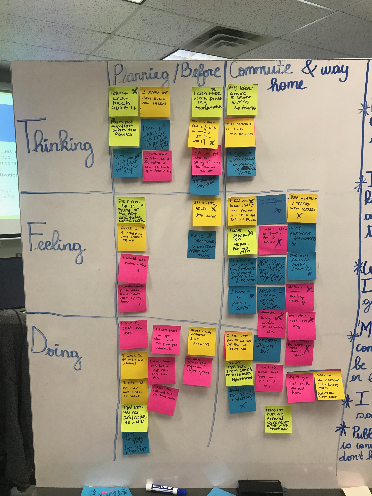
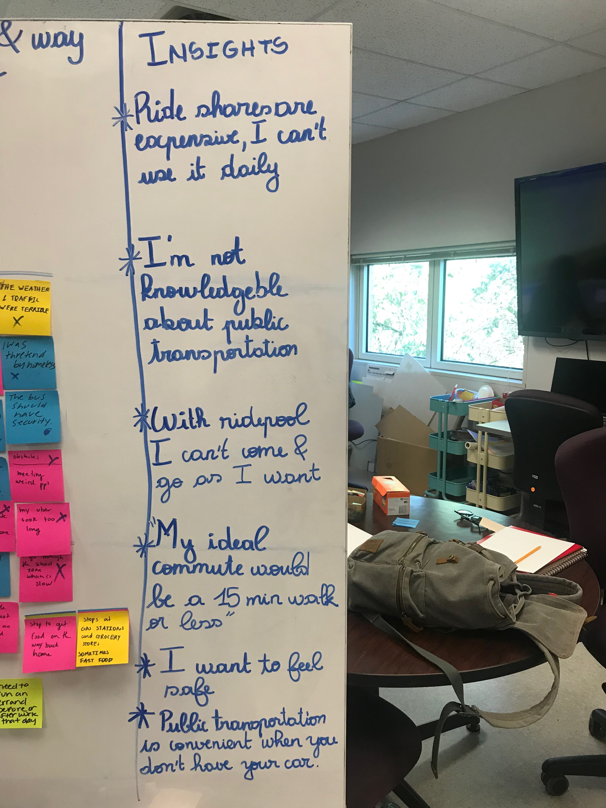
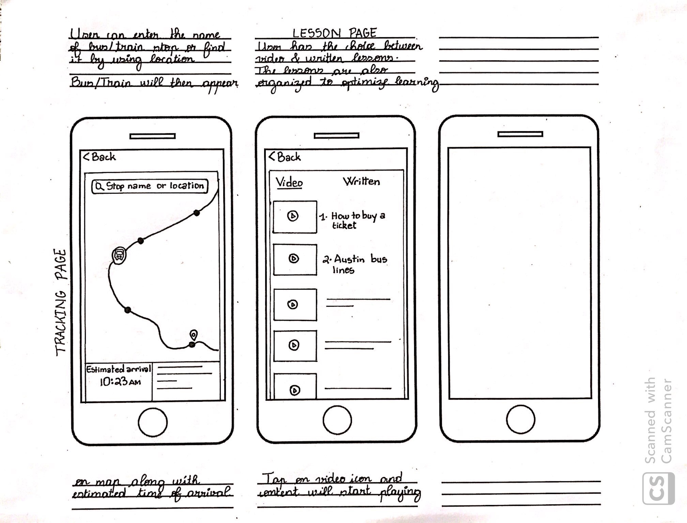
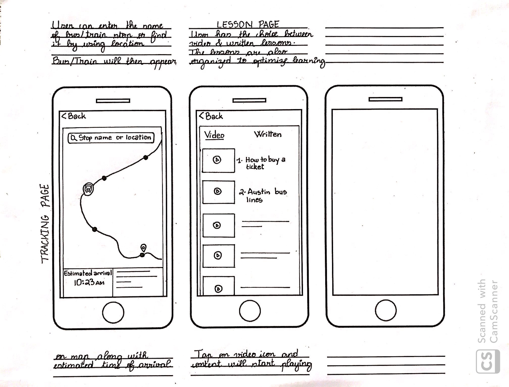

Austin Transit App
My initial challenge was "How might we design alternatives to single-use car trips to improve mobility for Austinites?" I started with the big idea method to rapidly create a wide range of solution to our users’ problems. Then diverge and build on each others idea and finally group our big idea into cluster so we can isolate potential solutions
I then narrowed the research goal to finding out if Austinite would be interested in a shuttle to and from work provided by their employer by using the big idea's outcome
I thn wrote a 9 questions interview to learn more about our research goal. From these questions I started the user research with an empathy map by analysing the responses I got from my interviews and then took it a step further with a scenario mapping, which help help divide our user’s journey with beginning a middle and an end. This personally helped me to isolate problem areas and come up with insights
 I came up with several insights based on my interviews response and decided to focus on “knowledge” because it seemed to us to be one of the roots of the problem so finding a solution to that would get us a step closer to fixing our bigger problem
From the chosen insight I used the crazy 8 method to come up with possible solution, the activity was helpful because it made me push beyond my first idea, which was least innovative, and to generate a wide variety of solutions to my challenge. My solution was an app which would allow austinite to buy ticket, track train/bus in real time and access video & written lesson on how to use public transportation
 
